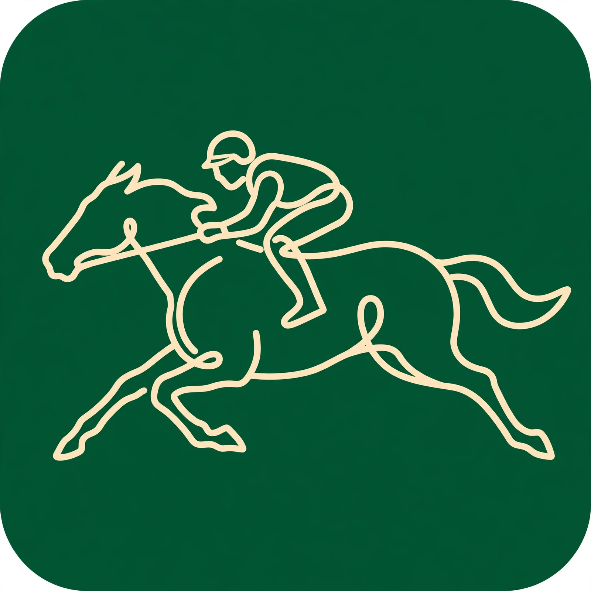

¿Empezar de nuevo? Tu saldo vuelve a $50.00 y se borra el historial. Tu récord, tu total ganado, tu nivel y tus copas se quedan: son marcas de por vida de este teléfono.

Resultado
Historial
0 carreras · 0 ganadas · mejor cobro $0.00
Saldo máximo: $0.00 · Total ganado en la caseta: $0.00
Puntos de caseta: 0 · Nivel: Novato
Copas: 0 veces Finalista · 0 veces Campeón
Todavía no has jugado. ¡La primera carrera te espera!
Auspiciador: 0 toques · Compartido: 0 veces · Visitas en este teléfono: 0
Toques por espacio — Arriba: 0·0·0·0·0 · Abajo: 0·0·0·0·0 · Izquierda: 0·0·0·0·0 · Derecha: 0·0·0·0·0
Este mes: 0 visitas · 0 carreras · 0 toques a anuncios
Actividad registrada en este teléfono. Estos números son solo de este teléfono. El conteo total de todos los jugadores se activa en la versión pública del juego.
Copa de la semana
COPA SUPERMERCADO EL AHORRO
Semana en curso
Puntos de esta semana: 0
- FINALISTA · 150 ptsEn curso
- CAMPEÓN DE LA COPA · 300 ptsEn curso
Torneo local de este teléfono, contra metas. Cada carrera suma a la Copa los mismos puntos de caseta que suma a tu nivel mientras la semana corre; al cambiar la semana, el contador de la Copa arranca en cero y el título de la semana anterior queda anotado en el Historial.
TORNEO EN LÍNEA
Torneo en línea — todos los jugadores. La misma semana (lunes a domingo) y los mismos puntos de cada carrera, pero contra la tabla real: el #1 de la semana queda coronado en el muro de campeones. Tu nombre queda fijo al sumar tus primeros puntos de la semana y no puede repetirse entre jugadores.
La tabla se busca al abrir este pliegue.
Campeones de la Copa
Misiones de hoy
Tres retos cortos que se renuevan solos cada día (hora de Puerto Rico). Al completarlos, el bono suma a tus puntos de caseta — a tu nivel y a la Copa de la semana — y también se envía al Torneo en línea. El dinero de tu saldo no se toca.
La tradición
Las picas son la caseta que no falta en las Fiestas Patronales de Puerto Rico: un mostrador largo con los números del 1 al 24, el dinero sobre el número, y en el centro el hipodromito de caballitos que el piquero mueve a manigueta, cantando el ganador. El piquero es el anfitrión que corre la pica: gira la manivela, recibe las apuestas y canta la carrera, animando a la gente.
Según la tradición oral, el juego llegó en 1927 y debutó en Cataño; desde los años sesenta fue la atracción principal de las patronales. Los caballitos se tallan en madera — artesanos como Don Roberto Maldonado han mantenido viva esa talla por generaciones.
La regla de oro es la de siempre: no gana el primero que cruza, gana el que queda más cerca de la última línea blanca sin pasarse.